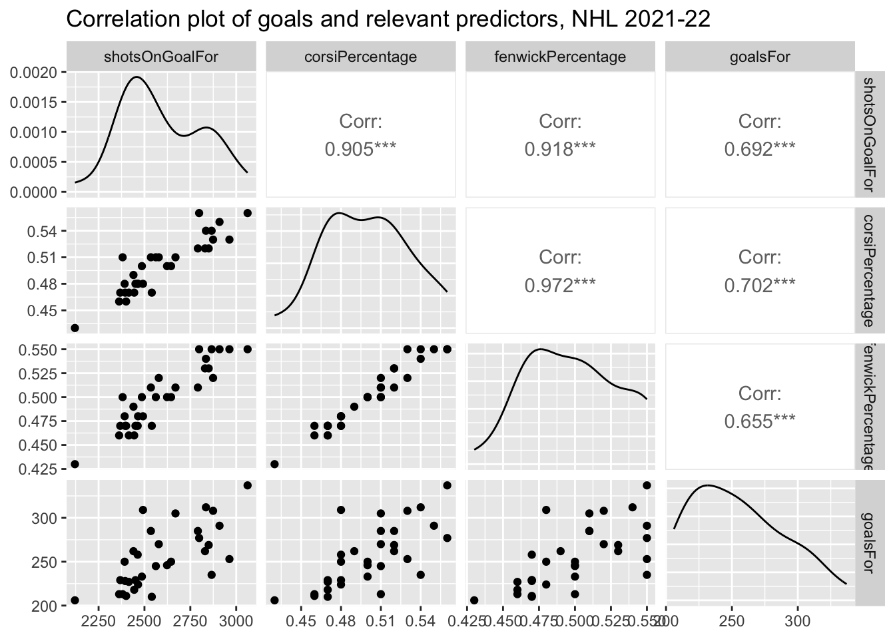

- About
- 1 Exploratory Data Analysis
- 2 Probability
- Chapter Preview
- 2.1 Definitions
- 2.2 Set Theory
- 2.3 Axioms, Properties, and Laws
- 2.4 Combinatorics
- 2.5 Odds and Gambling
- 2.6 Random Variables
- 2.7 Common Random Variables
- 2.8 Extra Stuff
- 2.8.1 Sets and Conditional Probability
- 2.8.2 Binomials and Multinomials
- 2.8.3 Expectation - Baseball
- 2.8.4 Basketball Scenario
- 2.8.5 Multiple Probability Distributions - Basketball
- 2.8.6 Law of Total Probability - Baseball
- 2.8.7 Multinomial Distribution - Baseball
- 2.8.8 Bayes - injured baseball player
- 3 Monte Carlo Simulation
- 4 Statistical Inference
- 5 Correlation
- 6 Linear Regression
- References
1.5 Football
Link to YouTube video describing football rules
1.5.1 Basic Football Statistics
Yards (Yd): Number of yards gained from the line of scrimmage (can be broken down into Offense: Rushing and Passing Yards, Defense: Rushing and Passing Yards Allowed, and Special Teams: Kick and Punt Return Yards)
Touchdowns (TD): Number of times the offense carries or passes the ball successfully into the end zone of the opposing side (can be broken down into: Offensive TDs: Rushing and Passing TDs, Defensive TDs: interception or fumble recovery for a touchdown, and Special Teams TDs: kick or punt return touchdowns)
Sacks (Sk): Number of times a player or a team tackles the quarterback behind the line of scrimmage before he can throw a pass
Interceptions (INT): Number of times a player or a team catches an opponent’s pass
1.5.2 Advanced Football Statistics
- Passer Rating (or Passing Efficiency): Measure of performance of a quarterback
For NFL, the formula is as follows:
\[Passer Rating_{NFL} = \left(\frac{a+b+c+d}{6}\right) \cdot 100\]
where: \[a = \left(\frac{COMP}{ATT}-0.3\right) \cdot 5\] \[b = \left(\frac{YDS}{ATT} - 3\right) \cdot 0.25\] \[c = \left(\frac{TD}{ATT}\right) \cdot 20\] \[d = 2.375 - \left(\frac{INT}{ATT} \cdot 25\right)\]
ATT = Number of passing attempts, COMP = Number of completions, YDS = Passing yards, TD = Touchdown passes, INT = Interceptions
Note: If the result of any calculation is greater than 2.375, it is set to 2.375. If the result is a negative number, it is set to zero.
For College Football, the formula is as follows:
\[Passer Rating_{NCAAF} = \frac{(8.4 \cdot YDS) + (330 \cdot TD) + (100 \cdot COMP) - (200 \cdot INT)}{ATT}\]
Total Quarterback Rating (QBR): Proprietary measure of performance of a quarterback developed by ESPN in 2011. This is a more comprehensive measurement of quarterback performance that accounts for the quarterback’s impact on his team’s passes, rushes, turnovers, and penalties in terms of expected points added.
Expected Points Added (EPA): Measure of how many points a player or a play is worth to a team.
References:
https://www.pro-football-reference.com/about/glossary.htm
https://en.wikipedia.org/wiki/Passer_rating
Example 1.12 Individual NFL quarterback passing statistics for the 2021 season are provided in NFL_Ind_Passing_2021.csv. Note that this dataset only includes quarterbacks with at least 100 passing yards in 2021. Passer efficiency is given in the RTG column.
# Data: https://www.espn.com/nfl/stats/player
QB_21 <- read_csv("data/NFL_Ind_Passing_2021.csv")
QB_21 %>% select(1,3:8,11:12,15:16) %>% slice_head(n=10) %>% kt()| Name | GP | CMP | ATT | CMP% | YDS | AVG | TD | INT | QBR | RTG |
|---|---|---|---|---|---|---|---|---|---|---|
| Tom Brady | 17 | 485 | 719 | 67.5 | 5316 | 7.4 | 43 | 12 | 68.1 | 102.1 |
| Justin Herbert | 17 | 443 | 672 | 65.9 | 5014 | 7.5 | 38 | 15 | 65.6 | 97.7 |
| Patrick Mahomes | 17 | 436 | 658 | 66.3 | 4839 | 7.4 | 37 | 13 | 62.2 | 98.5 |
| Josh Allen | 17 | 409 | 646 | 63.3 | 4407 | 6.8 | 36 | 15 | 60.7 | 92.2 |
| Derek Carr | 17 | 428 | 626 | 68.4 | 4804 | 7.7 | 23 | 14 | 52.4 | 94.0 |
| Ben Roethlisberger | 16 | 390 | 605 | 64.5 | 3740 | 6.2 | 22 | 10 | 35.6 | 86.8 |
| Trevor Lawrence | 17 | 359 | 602 | 59.6 | 3641 | 6.0 | 12 | 17 | 33.5 | 71.9 |
| Matthew Stafford | 17 | 404 | 601 | 67.2 | 4886 | 8.1 | 41 | 17 | 63.8 | 102.9 |
| Dak Prescott | 16 | 410 | 596 | 68.8 | 4449 | 7.5 | 37 | 10 | 54.6 | 104.2 |
| Kirk Cousins | 16 | 372 | 561 | 66.3 | 4221 | 7.5 | 33 | 7 | 52.3 | 103.1 |
names(QB_21)## [1] "Name" "Team" "GP" "CMP" "ATT" "CMP%" "YDS" "AVG" "YDS/G"
## [10] "LNG" "TD" "INT" "SACK" "SYL" "QBR" "RTG"- Confirm this is passer rating by creating a new variable to calculate passer rating using the provided statistics.
# Create intermediate variables
QB_21 <- QB_21 %>%
mutate(a = (CMP/ATT-0.3)*5) %>%
mutate(b = (YDS/ATT-3)*0.25) %>%
mutate(c = (TD/ATT)*20) %>%
mutate(d = 2.375 -(INT/ATT*25))
# Check to see if a,b,c,d are less than 0 or greater than 2.375
QB_21 %>% summarize(min(a),max(a),min(b),max(b),min(c),max(c),min(d),max(d))## # A tibble: 1 × 8
## `min(a)` `max(a)` `min(b)` `max(b)` `min(c)` `max(c)` `min(d)` `max(d)`
## <dbl> <dbl> <dbl> <dbl> <dbl> <dbl> <dbl> <dbl>
## 1 1.19 2.02 0.433 1.47 0.319 1.74 0.860 2.19QB_21 <- QB_21 %>%
mutate(PR = (a+b+c+d)/6*100)
QB_21 %>% select(Name,RTG,PR) %>% slice_head(n=5) %>% kt()| Name | RTG | PR |
|---|---|---|
| Tom Brady | 102.1 | 102.083 |
| Justin Herbert | 97.7 | 97.656 |
| Patrick Mahomes | 98.5 | 98.455 |
| Josh Allen | 92.2 | 92.170 |
| Derek Carr | 94.0 | 93.963 |
- What counting statistics are most correlated with passer rating and with QBR?
# Grab the counting statistics and create a correlation plot with PR and QBR
QB_21 %>% select(PR,QBR,CMP,ATT,YDS,TD,INT,SACK,SYL) %>% ggpairs()
- What rate statistics are most correlated with passer efficiency and with QBR? Use CMP% (completion percentage, completions per attempt), AVG (average yards per attempt), YDS/G (yards per game), and create new variables for interceptions per attempt, touchdowns per attempt, and sacks per attempt.
# Grab the counting statistics and create a correlation plot with PR and QBR
QB_21 <- QB_21 %>%
mutate(INTp = INT/ATT) %>%
mutate(TDp = TD/ATT) %>%
mutate(SACKp = SACK/ATT)
QB_21 %>% select(PR,QBR,`CMP%`,AVG,`YDS/G`,INTp,TDp,SACKp) %>% ggpairs()